"KINGDOM ANIMALIA"
MAMMALS
A warm-blooded vertebrate animal of a class that is distinguished by the possession of hair or fur, females that secrete milk for the nourishment of the young, and (typically) the birth of live young.Lion

1.On average, males weigh 190kg (almost 30 stone) and females weigh 126kg (almost 20 stone). They need this weight and power behind them to hunt large prey and defend their pride.
2.Young lions have rosettes and spots on their sandy coats, but these generally disappear as they mature.
3.Male lions grow impressive manes the older they get. These manes grow up to 16cm long and are a sign of dominance. The older they get, the darker their manes go.As well as attracting females, their manes may also protect their neck and head from injuries during fights.
4.Lions are highly adaptable and can live in very dry areas like the Kalahari Desert. Here they get most of their water from their prey and will even drink from plants such as the Tsamma melon.
5.Lions can eat up to 40kg of meat in a single meal - around a quarter of their body weight. Their tongues have sharp-pointed rasps, called papillae, which are used to scrape meat off the bones.
6.Lions are the only known cat species where individuals roar together - with even young cubs joining in with their mews. The calling sequence usually lasts about 40 seconds. Prides often roar together to mark their territory - a roar can be heard from 5 miles away.
Tiger

1. It is said that one swipe from a Tiger’s front hand is enough to kill a person or an animal, or at least break one’s bones.
2.It is not necessarily true that all Tigers are nocturnal but yes, they do prefer engaging in most of their hunting activities at night. The reason behind this is that Tigers prefer avoiding human conflict during daylight and also patrol around their territory at night.
3.Tigers cannot purr.
4.Tigers do not normally view humans as a prey
5.It is true, Tigers are considered as solitary animals. Unlike the sights of multiple tigers kept in one cage in the zoos, you are less likely to spot the same age group of tigers roaming together in the wild. Tigers like to stay alone, they are often observed taking a leisure walk all by themselves or perhaps building his strategies for his next meal.
6.Perhaps, a good side of Tigers is that they have antiseptic saliva,Usually what they do is, they tend to lick the area in order to prevent any infection.
Panther
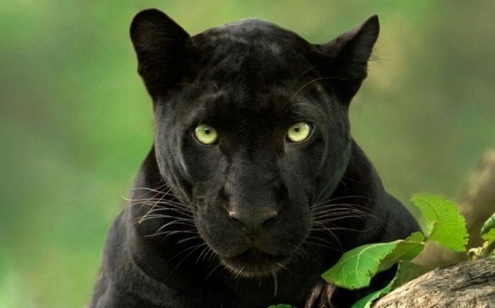1.Melanism is the name of the dark color pigmentation mutation in a jaguar or leopard that cause the fur to be blackish, it occurs in about 6% of the population.
2.Apart from color the black panther is believed to be less fertile than normal-colored big cats and also much more unpredictable and aggressive.
3.Black panthers are great swimmers and are one of the strongest tree climbing big cats, often pouncing on prey from a tree, they are capable of leaping up to 20 feet to catch their prey which includes medium sized animals like deer and monkeys and smaller rabbits and birds.
4.The light tan colored Florida panther is one of over 30 subspecies of cougar (Puma concolor) found in North America.
5.Black panthers have good hearing, extremely good eyesight, and a strong jaw.
6.The black panther is often called 'the ghost of the forest'. It is a smart, stealth-like attacker, its dark coat helps it hide and stalk prey very easily, especially at night.
Bear
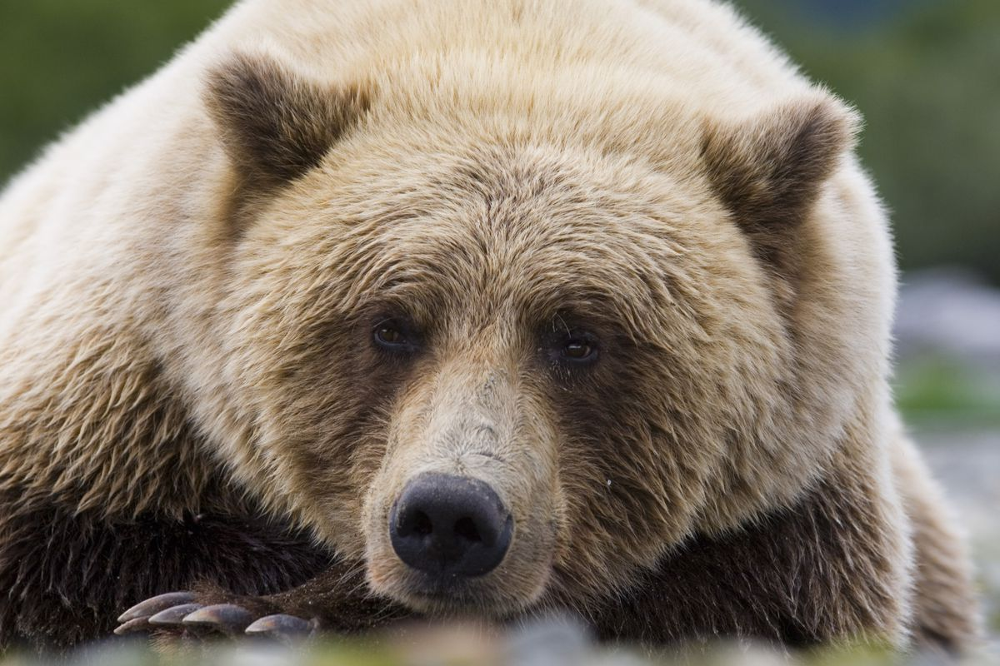1.Bears are extraordinarily intelligent animals. They have far superior navigation skills to humans; excellent memories; large brain to body ratio; and use tools in various contexts from play to hunting.
2.Bears grieve deeply for others. Cubs are known to moan and cry when separated from their mothers. This can go on for weeks if their mothers are killed by hunters.
3.Bears have excellent senses of smell, sight and hearing. They can smell food, cubs, a mate or predators from miles away. Their great eyesight allows them to detect when fruits are ripe.
4.Some species of Asiatic bear build nests in the trees. They can use these for hiding, eating and even sleeping.
5.Bears were often honoured in the cultures of many early civilisations. They were seen as a symbol of power, strength and love.
6.Like human children, bear cubs are extremely playful; and just like human mothers, if things get too rough, mother bears will make them stop to protect them from hurting themselves.
Fox
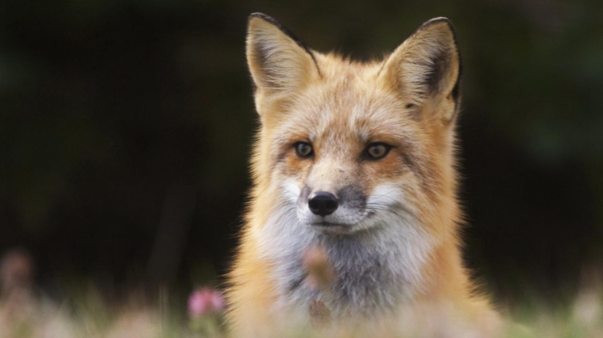1.Like the cat, the fox is most active after the sun goes down. In fact, it has vertically oriented pupils that allow it to see in dim light. It even hunts in a similar manner to a cat, by stalking and pouncing on its prey.
2.Like a guided missile, the fox harnesses the earth's magnetic field to hunt. Other animals, like birds, sharks, and turtles, have this "magnetic sense," but the fox is the first one we've discovered that uses it to catch prey.
3.Foxes are known to be friendly and curious. They play among themselves, as well as with other animals, like cats and dogs do. They love balls, which they will steal from backyards and golf courses.
4.The arctic fox, which lives in the northernmost areas of the hemisphere, can handle cold better than most animals on earth. It doesn't even get cold until –70°C (-94°F).
5.The bat-eared fox is aptly named, not just because of its 5-inch ears, but because of what it uses those ears for—like the bat, it listens for insects. On a typical night, it walks along the African savannah, listening until it hears the scuttle of prey.
6. Today, you can buy a pet fox for $9000, according to Fast Company. They're reportedly curious and sweet-tempered, though they are inclined to dig in the garden.
Gorilla

1.The exposure to human illnesses – even a cold - can have potentially detrimental impacts on gorillas as they are so genetically similar to us, but they haven't developed the necessary immunities.
2.An average male mountain gorilla can weigh 180kg (that’s almost 30 stone), and measure 170cm (over 5’5”) tall.
3.Mountain gorillas spend about a quarter of their day eating mainly leaves and shoots, but have also been known to eat snails, ants and bark (a good source of sodium).
4.At night, mountain gorilla groups sleep together in nests on the ground, or in trees, that they make from foliage. Infants will share their mother’s nests, staying safe and warm.
5.The type of calls includes short barks when they’re mildly alarmed or curious. To intimidate rivals, male gorillas strut with stiff legs, beat their chests, and use vocalisations like roars or hoots.
6.Gorillas are classed as infants until they reach around three-and-a-half years old, and adults from around 8 years. Males between 8-12 years are called 'blackbacks'. Then from 12 years old, they develop a silver section of hair over their back and hips, earning them the name 'silverback'.
Camel
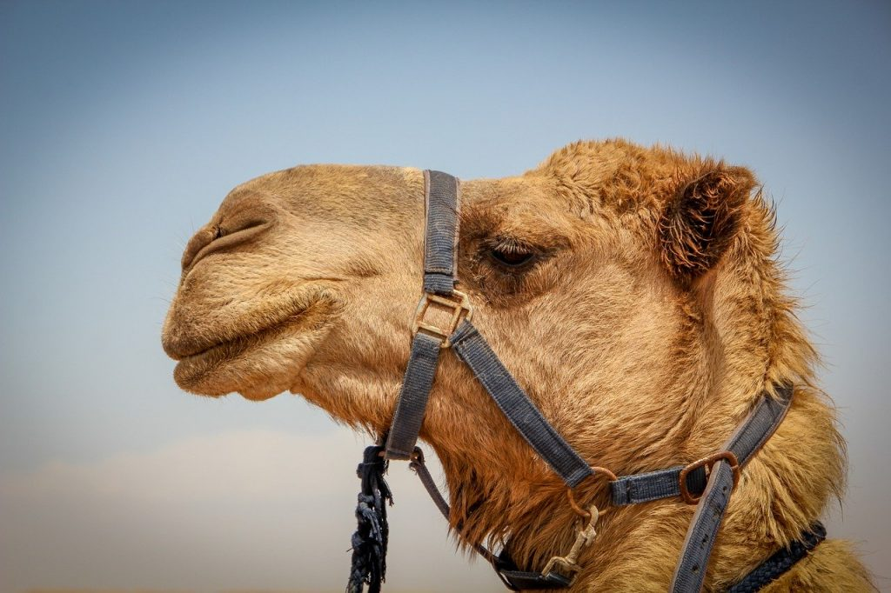1.There are two types of camels: One humped or “dromedary” camels and two humped Bactrian camels
2.Camels can completely shut their nostrils during sandstorms.
3.Thanks to thick pads of skin on their chest and knees, camels can comfortably sit in very hot sand.
4.When a camel finally does find water, he can drink up to 40 gallons in one go.
5.Camels can travel at up to 40 miles per hour – the same as a racehorse!
6.There are over 160 words for camel in Arabic alone.
Bever

1.American beaver kits can swim 24 hours after birth.
2.Beavers have bodies that are made for the water. Their rudder-like tail and webbed feel propel them through the water at 5 mph (8 kph). They can also stay under water for around 15 minutes at a time, according to National Geographic.
3.In the 16th century, the pope decreed that, due to the scaly tail and semi-aquatic lifestyle, beaver could be considered a fish and be eaten during Catholic fasting days, according to ADW.
4.Beavers are very social and live in groups called colonies. One lodge is often the home for a monogamous couple, their young and the yearlings born the year before.
5.eavers don’t just build homes from trees, they also eat them. Unlike other mammals, beavers can digest cellulose, which is a major component of their diet, according to ADW.
6.Beavers are primarily nocturnal. They spend most of their time eating and building. Beaver create dams to make ponds, their favorite place to live.
Hippo
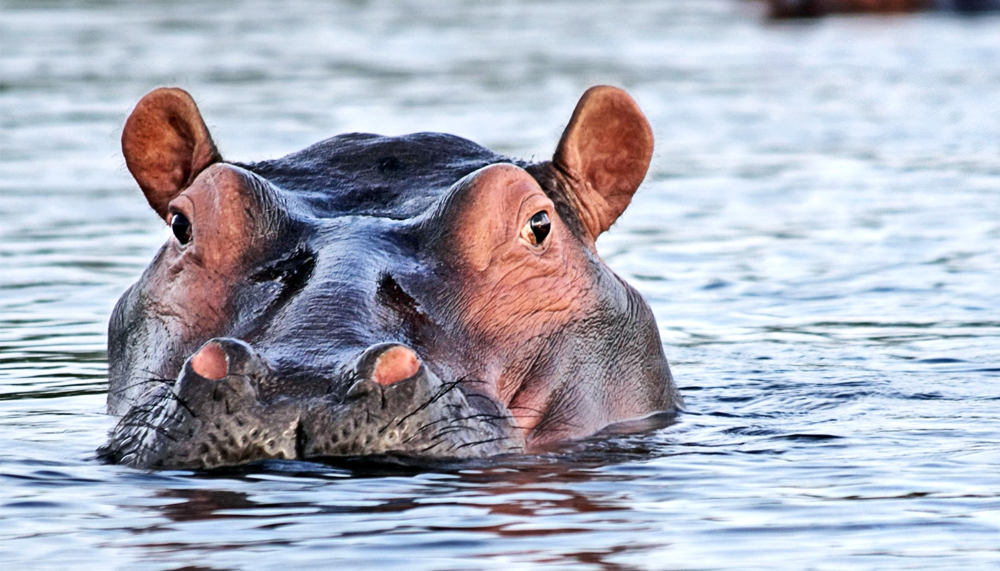1. Hippos are large semi-aquatic mammals, with a large barrel-shaped body, short legs, a short tail and an enormous head! They have greyish to muddy-brown skin, which fades to a pale pink colour underneath.
2. They are considered the second largest land animal on Earth (first place goes to the elephant!). Males measure around 3.5m long and 1.5m tall, and can weigh up 3,200kg. That’s as much as three small cars!
3. Hippos are most active at night, when they forage for food.They eat mostly grass.In just one night, they can guzzle down up to 35kg of their favourite grub!
4.Despite their enormous size, hippos are great swimmers and can hold their breath for up to five minutes underwater.
5.Female hippos, called cows, give birth every two years, usually to a single calf. Soon after birth, the mother and her baby join up with other cows and calves for protection against predators
6. In the wild hippos live for around 40 years. In captivity, they tend to live longer and may reach up to 50 years old.
Rhinoceros
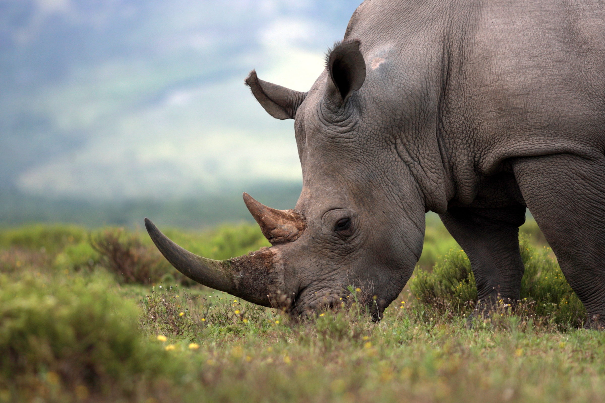1.Our planet is home to five species of rhinoceros – the black rhino and the white rhino, which live in Africa, and the Sumatran, Javan and Indian (or greater one-horned) rhino, which inhabit the tropical forests and swamps of Asia.
2.These incredible creatures are some of the biggest animals in world! The largest of the five species is the white rhino, which can grow to 1.8m tall and and weigh a massive 2,500kg – that’s the weight of 30 men!
3.Because of their huge bodies, strong horns and thick, armour-like skin, rhinos have no natural predators.
4.For the most part, rhinoceroses are solitary animals and like to avoid each other.
5.They’re very territorial, too, and mark out their area of land
6. During the heat of the day, these magnificent mammals can be found sleeping in the shade or wallowing in muddy pools to cool off.
Elephant
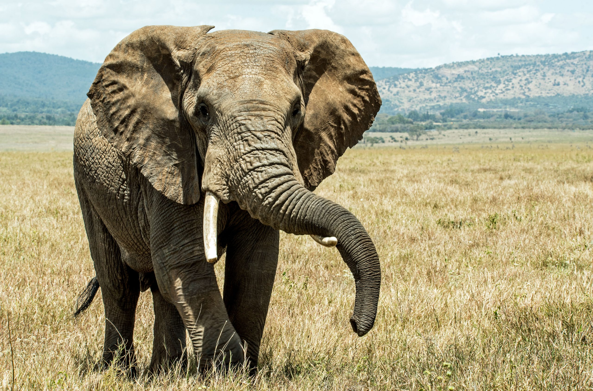1.There are three different species of elephant – the African Savannah elephant, the African Forest elephant and the Asian elephant. Elephants are known for their large ears, tusks made of ivory and their trunks – which are actually a fusion of their nose and upper lip.
2. Elephants are the world’s largest land animal! Male African elephants can reach 3m tall and weigh between 4,000 -7,500kg. Asian elephants are slightly smaller, reaching 2.7m tall and weighing 3,000– 6,000kg.
3.African elephants have large ears shaped like the continent of Africa! Asian elephants’ ears are smaller and shaped like India.
4. These magnificent mammals spend between 12 to 18 hours eating grass, plants and fruit every single day! They use their long trunks to smell their food and lift it up into their mouth
5. In Mount Elgon National Park in Kenya, a group of elephants use their tusks to mine for salt in underground caves! They feel their way around with their trunks and eat the salts by breaking them off with their tusks.
6. Elephants have created their very own sunscreen! After a river or swamp bath, they’ll throw mud and sand up and over themselves to protect their skin from the hot, burning sun.
Platypus
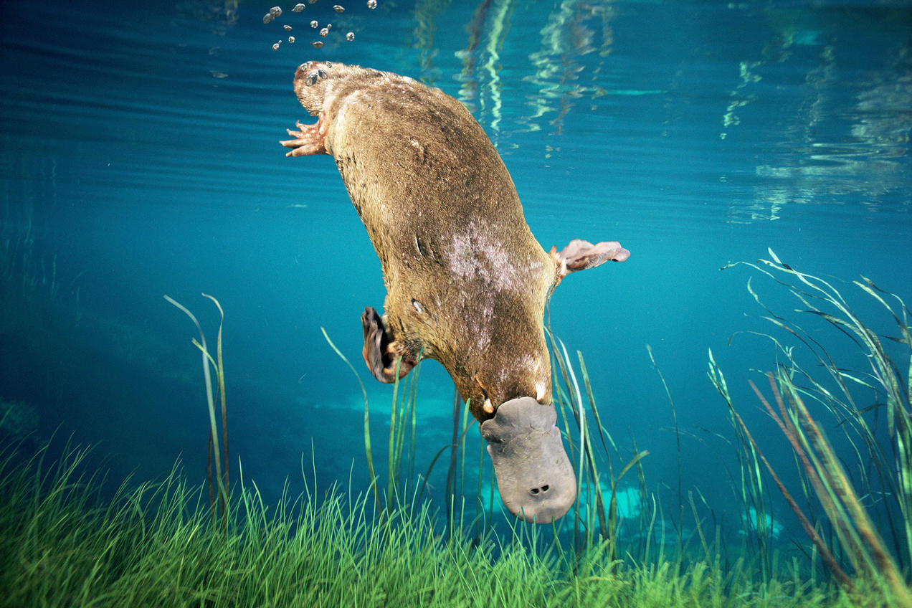1.Platypus’s bill has thousands of cells that give it a sort of sixth sense, allowing them to detect the electric fields generated by all living things.
2.In 2013, the discovery of a single tooth helped researchers identify a prehistoric platypus that was more than three feet long—double the size of the modern animal.
3.Platypuses are one of only five species of extant monotremes—just them and four species of echidna—which split from the rest of the mammals 166 million years ago. These egg-laying mammals get their name from the hole that serves as both an anus and a urino-genital opening.
4.Although platypuses are born out of leathery eggs, the babies nurse from their mother. Female platypuses, however, don’t have nipples. Instead, their milk is released out of mammary gland ducts on their abdomen.
5.Platypuses are one of just a few venomous mammals, which is one of their more reptilian characteristics. But unlike snakes, a platypus’s venom isn’t in his teeth.
6.Unlike beavers, which have very visually similar tails, platypuses don't use their tails to slap the water in warning, or even to move them through the water. Most of the time, the primary function of the platypus's tail is just to store up to nearly half of the animal's body fat in case of a food shortage. A female platypus also uses her tail to hold incubating eggs against her warm body.
REPTILES
A vertebrate animal of a class that includes snakes, lizards, crocodiles, turtles, and tortoises. They are distinguished by having a dry scaly skin and typically laying soft-shelled eggs on land.Snake

1.There are over 3000 kinds of snakes in the world. They are present in every continent except Antarctica
2.Snakes cannot bite their food so in order to eat large prey, they will unhinge their jaw to swallow the food whole
3.Snakes such as boas and anacondas suffocate their prey by squeezing it to death
4.Rattlesnakes have a loud rattle on the end of their tail which they use if they feel threatened. Other snakes hiss when they are threatened
5.Despite snakes often being feared, more people are killed by bees than snakes every year
6.There is an island in Brazil that has up to 5 snakes per square metre! People are not allowed to go to the island as it is the home of the golden lancehead snake which is critically endangered
Chameleon
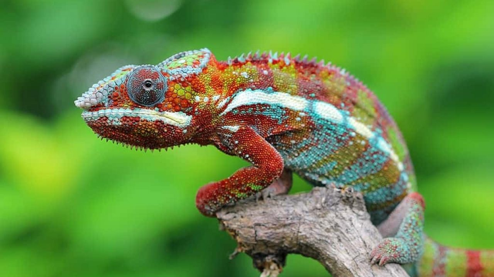1.A chameleon’s foot consists of two fleshy pads that oppose each other. One pad contains three digits that are fused together while the other has two fused digits
2.Currently, there are around 200 different chameleon species, 44 percent of which can be found on Madagascar—leading some experts to wonder if the whole chameleon family originally evolved there.
3.The diurnal lizard’s maximum adult length is only an inch, and juveniles can fit on the head of a match.
4.Another primary function of color change is communication: Altering skin tone can let potential mates or rivals know what’s on your mind.
5.When a male panther chameleon is relaxed, the cells containing its crystals are held closely together. In this position, they reflect blue light, which—when filtered through yellow skin pigments—makes the animal look green.
6.Each eye has the incredible range of motion of 90 degrees vertically and 180 degrees horizontally. And that’s not all: The peepers can also move in opposite directions—so while one eye is looking upwards and to the left
Lizard
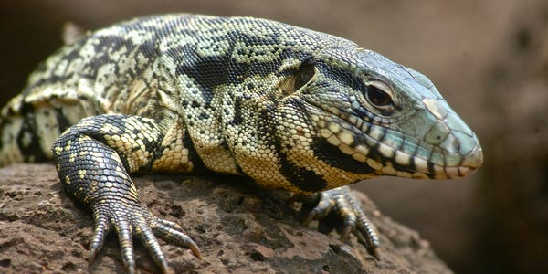1.The Komodo Dragon is the largest lizard in the world - it can grow up to 10-11ft.
2. The smallest lizard is the Marche Leon Least Gecko, weighing just 0.12g.
3. The Horned lizard can squirt blood from its eye sockets and can hit targets up to 4ft away.
4.Some lizards can detach their tails if caught by predators.
5.The Basilisk lizard can run on water to escape predators, nicknamed ‘Jesus Christ’ lizard.
6. Some species, such as beaded lizards, can survive on just three large meals a YE
Turtle
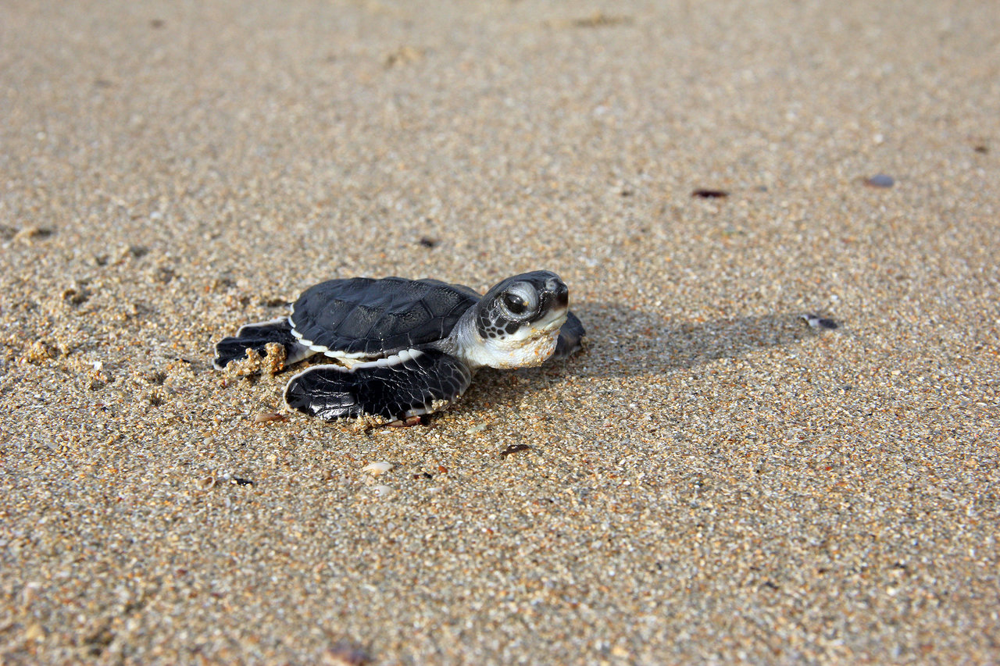1.Turtles belong to one of the oldest reptile groups in the world – beating snakes, crocodiles and alligators!
2.These creatures date back to the time of the dinosaurs, over 200 million years ago
3.Turtles are easily recognised by their bony, cartilaginous shell. This super-tough casing acts like a shield to protect them from predators – some turtles can even tuck their head up inside their shell for extra protection!
4.Just like your bones, a turtle’s shell is actually part of its skeleton. It’s made up of over 50 bones which include the turtle’s rib cage and spine.
5.What a turtle eats depends on the environment it lives in. Land-dwelling turtles will munch on beetles, fruit and grass, whereas sea dwellers will gobble everything from algae to squid and jellyfish.
6. These cold-blooded creatures have an incredibly long life span. The oldest ever recorded, named Tu”i Malila, of Tonga Island, passed away at the grand old age of 188!
Crocodile
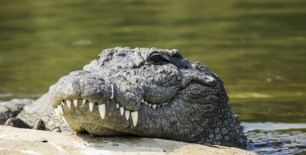1.There are 23 different species of crocodile that live on this planet
2.Crocodiles are quite a versatile reptile which means they can live in a variety of environments. Some of these may include lakes, rivers, freshwater bodies, salt water and brackish water (a combination of salt and freshwater).
3. Although they have since been replaced by humans, crocodiles were once at the top of the food chain. Of course, we’re talking a long time ago – approximately 100 million years ago – during the Mesozoic Era.
4. Ever heard the term ‘crocodile tears’? There’s an age-old myth that crocodiles cry when devouring their prey. And while technically crocodiles have glands that can produce tears, it’s not actually considered crying. Whilst eating, the crocodile swallows too much air which impacts with the lachrymal gland and forces tears to flow.
5crocodiles actually eat without chewing. Their jaw operates in such a way that it cannot move sideways, therefore they can’t grind down on food in a traditional chewing motion.v
6. When a female crocodile lays eggs (of which there can be up to 60 at a time), the temperature of the nest where the eggs are laid actually determines the sex of the baby. If the temperature is less than 32 degrees Celsius, the baby crocodiles will be female and if it’s above that temperature, they will be male.
Dinosaur
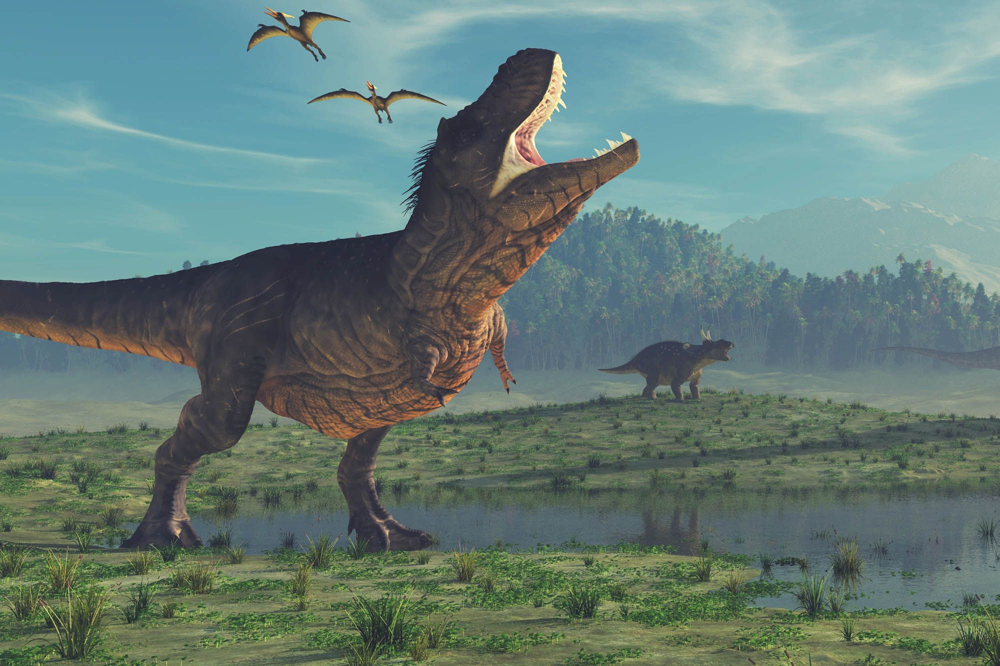1.Dinosaurs are a group of reptiles that have lived on Earth for about 245 million years.
2.Dinosaur fossils have been found on all seven continents.
3.There are roughly 700 known species of extinct dinosaurs.
4.Modern birds are a kind of dinosaur because they share a common ancestor with non-avian dinosaurs.
5.All non-avian dinosaurs went extinct about 66 million years ago.
6.In 1842, the English naturalist Sir Richard Owen coined the term Dinosauria, derived from the Greek deinos, meaning “fearfully great,” and sauros, meaning “lizard.”
BIRDS
A warm-blooded egg-laying vertebrate animal distinguished by the possession of feathers, wings, a beak, and typically by being able to fly.Humming Bird
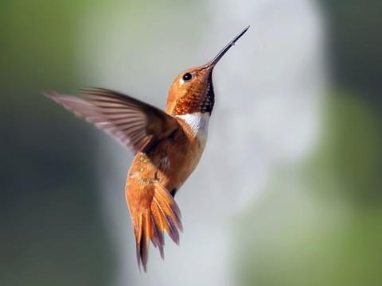1.They are the smallest migrating bird. They don’t migrate in flocks like other species, and they typically travel alone for up to 500 miles at a time.
2. The name, hummingbird, comes from the humming noise their wings make as they beat so fast.
3. Hummingbirds are the only birds that can fly backwards.
4.The average weight of a hummingbird is less than a nickel.
5.Their tiny legs are only used for perching and moving sideways while perched. They can’t walk or hop.
6. A flock of hummingbirds can be referred to as a bouquet, a glittering, a hover, a shimmer, or a tune.
Owl

1.There are around 200 different owl species.
2.Owls are active at night (nocturnal).
3.A group of owls is called a parliament.
4.Owls can turn their heads as much as 270 degrees.
5.Owls are farsighted, meaning they can’t see things close to their eyes clearly.
6.The color of owl’s feathers helps them blend into their environment (camouflage).
Woodpecker
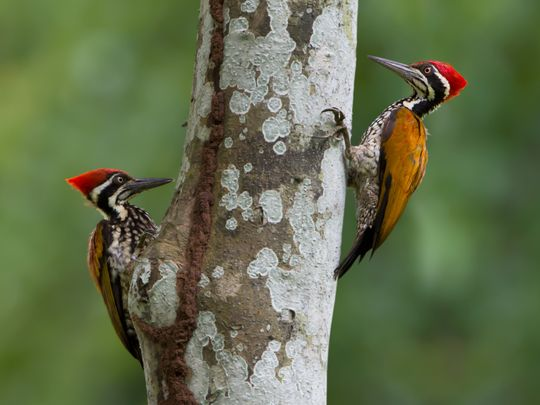1.Woodpeckers' tongues are usually about twice the length of their bill so that they can reach for insects inside the holes they peck out. When not in use, the long tongue curls around the back of the head between the skull and the skin.
2.Woodpeckers have strong tail feathers that support the bird as it holds itself on a tree trunk, and they also have two back toes to lean back on.
3.If you look at the pictures above, you can see that woodpeckers have fuzzy noses. Their nostrils are covered in feathers to keep splinters and dust out while they peck.
4.Woodpecker bills help distribute shock throughout the thick skull when pecking. Humans would have plenty of pain hitting their heads against a tree, but woodpeckers don't have any issues!
5.Lowa woodpeckers nest in tree cavities, with access holes they carve out themselves. They will peck an entrance that is a perfect circle.
6.Woodpeckers create new holes each year, and their old holes are often used by other birds.
Toucan
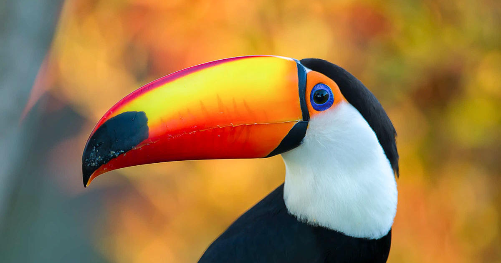1. The Toco Toucan is actually the largest toucan of all the species, measuring in at a whopping 25 inches (63.5 cm) with an 8 inch (19cm) neon orange beak.
2.The toucans colorful brilliance is actually smartly designed camouflage for the rainforest, allowing them to hide amongst the South American plants.
3.The average life expectancy of a toucan is a very impressive 20 years.
4.The inside of a beak is made of bone whereas the outer beak itself is actually made of Keratin.
5.When Europeans first arrived in the Americas, it is said that the toucan was actually one of the first birds they would have seen.
6.Belize has the rainbow-billed toucan as its national bird.
Penguin

1.A group of penguins in the water is called a raft but on land they’re called a waddle!
2.The black and white “tuxedo” look donned by most penguin species is a clever camouflage called countershading.
3.Penguins may huddle together for several reasons.
4.Penguins evolved to fly underwater.Most birds have hollow, air-filled bones to help them stay light for flight. Penguins adapted with solid bones instead. This helps them swim because solid bones reduce buoyancy—the tendency to float.
5.A gland near the base of its tail provides waterproof oil. Penguins spend several hours each day covering their feathers with this oil and give extra attention to the task before swimming
6.Some species of penguins can march up to about 60 miles across sea ice to get to their breeding grounds. Penguin feet are also adapted to help the birds steer while swimming. They use their feet like rudders, angling them to help control direction.
Parrot
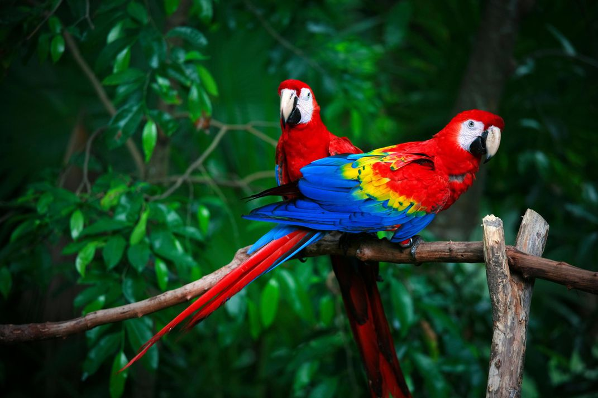1.Like most other birds, parrots have four toes per foot. But instead of the usual three-in-front-one-behind arrangement, parrot toes are configured for maximum grip: two in front and two behind, like two pairs of opposable thumbs. Combined with beaks that can crack even the world’s toughest nuts, their unique feet make them formidable eaters, not to mention dexterous climbers.
2.Many parrots are omnivores and will eat pretty much anything—fruit, seeds, nuts, insects and even meat. Some species, like the rainbow-colored lories and lorikeets of the South Pacific, feed almost exclusively on nectar with brush-tipped tongues, though recently even these birds were seen eating meat at feeding stations in Australia.
3.With a couple of notable exceptions, males and females of most parrot species look virtually identical. It takes a keen eye—and usually a lab test—to tell a boy bird from a girl bird.
4.Though parrots do have some taste glands at the backs of their throats, most of their 300 or so taste buds are located on the roofs of their mouths.
5.Parrots cover an incredible range of shapes and sizes. The tiny buff-faced pygmy (Micropsitta pusio) weighs a mere ounce and is about the size of an adult human’s finger. The world’s longest parrot is the brilliant hyacinth macaw (Anodorhynchus hyacinthinus), checking in at nearly 3.5 feet from tip to tail. But New Zealand’s flightless, nocturnal kakapo (Strigops habroptilus) wins for weight: A fully grown male can register as much as nine pounds—the average weight of an adult housecat.
6.A parrot’s brilliant plumage has a special defense against damage: Psittacofulvins, a bacteria-resistant pigment that only parrots are known to produce, give the birds' feathers their red, yellow and green coloration
Pigeon

1.Pigeons are incredibly complex and intelligent animals. They are one of only a small number of species to pass the ‘mirror test’ – a test of self recognition
2.Pigeons are highly sociable animals. They will often be seen in flocks of 20-30 birds.
3.Pigeons have excellent hearing abilities. They can detect sounds at far lower frequencies than humans are able to, and can thus hear distant storms and volcanoes.
4.Pigeons can fly at altitudes up to and beyond 6000 feet, and at an average speed of 77.6 mph. The fastest recorded speed is 92.5 mph.
5.Although pigeon droppings are seen by some as a problem in modern society, a few centuries ago pigeon guano was seen as extremely valuable. It was viewed as the best available fertiliser and armed guards would even stand by dovecotes (pigeon houses) to stop others taking the droppings.
6.Despite the social perception as dirty and disease-ridden, pigeons are actually very clean animals and there is very little evidence to suggest that they are significant transmitters of disease.
Impact of humans on wildlife
Human activities are causing major changes in biological communities worldwide, and these changes can harm biodiversity and ecosystem function.The main threats to biodiversity are following:
- Destruction
- Degradation
- Fragmentation of Habitat
- Pollution
- Exploitation
What can we do to save it!
We can take following measures to save it:
- Reduce, Reuse, Recycle
- Plant local flowers and veggies
- Conserve your water use
- Buy local foods around you
- Protect Natural Habitats
Save the document by pressing Ctrl + S